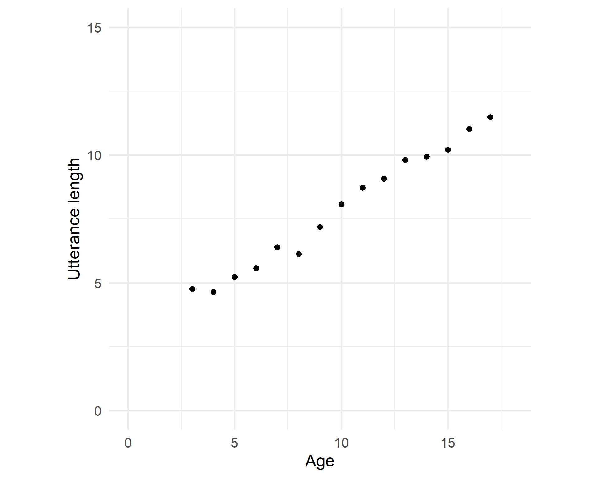
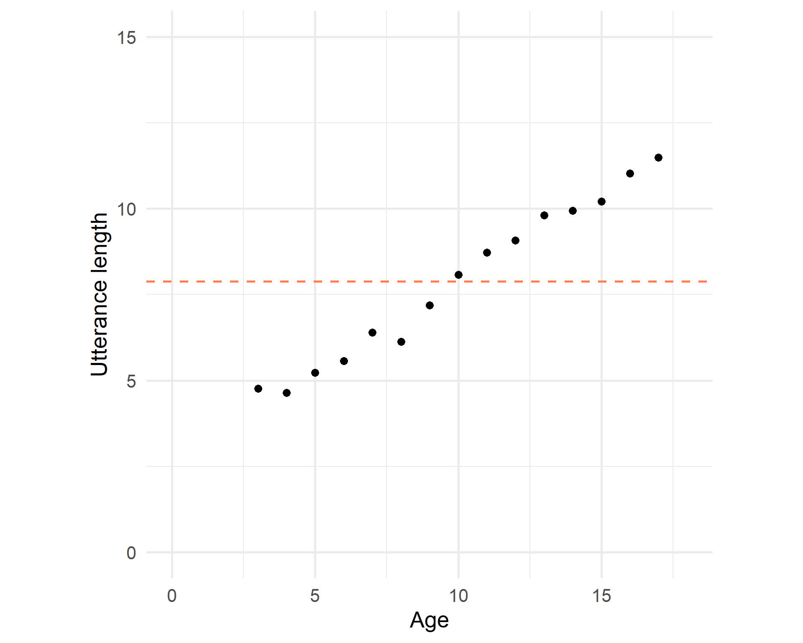
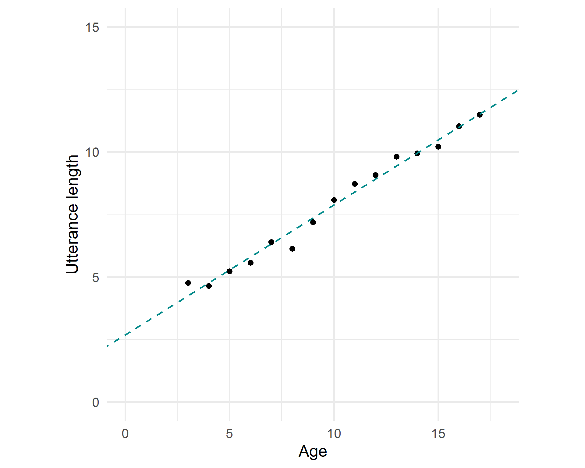
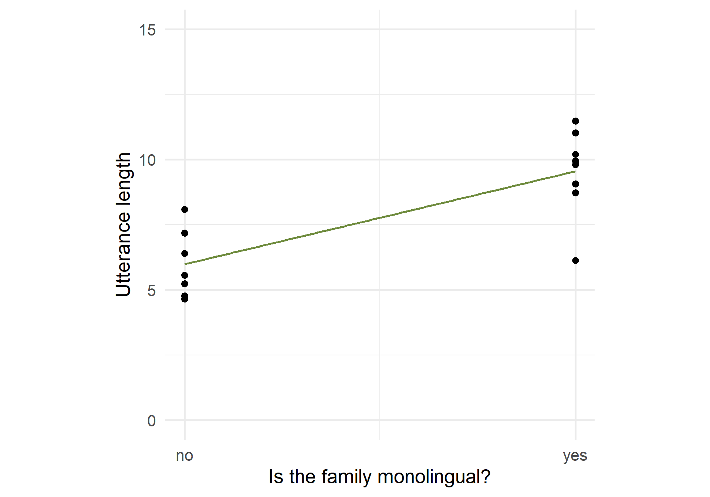

Methods of Corpus Linguistics (class 5)
In case you want to run this by yourself…
Simple linear regression
What is the relationship between the age of a child and the mean length of their utterances (in a corpus)?

Simple linear regression
The average utterance length is 7.885:

Simple linear regression
But we try to find a line that fits the trend the best:

Simple linear regression
Simple linear regression
| age | utterance_length | fit | intercept |
|---|---|---|---|
| 17 | 11.48 | 11.52 | 7.88 |
| 14 | 9.94 | 9.96 | 7.88 |
| 16 | 11.03 | 11.00 | 7.88 |
| 8 | 6.13 | 6.85 | 7.88 |
| 9 | 7.18 | 7.37 | 7.88 |
| 15 | 10.21 | 10.48 | 7.88 |
| 7 | 6.40 | 6.33 | 7.88 |
Simple linear regression
lm() output
Call:
lm(formula = utterance_length ~ age, data = utt_lengths)
Residuals:
Min 1Q Median 3Q Max
-0.717 -0.154 -0.016 0.174 0.518
Coefficients:
Estimate Std. Error t value Pr(>|t|)
(Intercept) 2.6958 0.2036 13.2 6.3e-09 ***
age 0.5189 0.0187 27.8 5.8e-13 ***
---
Signif. codes: 0 '***' 0.001 '**' 0.01 '*' 0.05 '.' 0.1 ' ' 1
Residual standard error: 0.313 on 13 degrees of freedom
Multiple R-squared: 0.983, Adjusted R-squared: 0.982
F-statistic: 771 on 1 and 13 DF, p-value: 5.84e-13Simple linear regression
one predictor variable
linear relation between estimated parameters and response variable
y ~ x
Ordinary least squares, minimizing sum of squares of residuals
Simple linear regression
set.seed(7)
utt_lengths <- utt_lengths %>%
mutate(pages_read = n()/2 + rnorm(n(), mean = 6, sd = 3))
m2 <- lm(utterance_length ~ age + pages_read, data = utt_lengths)
utt_lengths$fit2 <- m2$fitted.values
utt_lengths %>% slice_tail(n = 7) %>% kb_style()| age | utterance_length | fit | pages_read | fit2 |
|---|---|---|---|---|
| 11 | 8.72 | 8.40 | 14.0 | 8.35 |
| 12 | 9.07 | 8.92 | 20.1 | 9.04 |
| 13 | 9.80 | 9.44 | 14.6 | 9.38 |
| 14 | 9.94 | 9.96 | 21.6 | 10.10 |
| 15 | 10.21 | 10.48 | 20.3 | 10.56 |
| 16 | 11.03 | 11.00 | 14.5 | 10.89 |
| 17 | 11.48 | 11.52 | 19.2 | 11.54 |
Multiple linear regression
plt = require("https://cdn.plot.ly/plotly-latest.min.js")
points = [{x: data.age, y: data.pages_read, z: data.utterance_length,
type: "scatter3d", mode: "markers", hovertemplate: '<b>Age</b>: %{x}' + '<br><b>UT</b>: %{z:.2f}<br>' + '<b>PR</b>: %{y:.2f}'}]
surface = [{x: data.age, y: data.pages_read, z: surface_fit,
type: "surface", showscale: false}]Multiple linear regression
Call:
lm(formula = utterance_length ~ age + pages_read, data = utt_lengths)
Residuals:
Min 1Q Median 3Q Max
-0.6100 -0.1804 -0.0159 0.2139 0.4207
Coefficients:
Estimate Std. Error t value Pr(>|t|)
(Intercept) 2.3841 0.3157 7.55 6.7e-06 ***
age 0.5052 0.0212 23.82 1.8e-11 ***
pages_read 0.0295 0.0232 1.27 0.23
---
Signif. codes: 0 '***' 0.001 '**' 0.01 '*' 0.05 '.' 0.1 ' ' 1
Residual standard error: 0.306 on 12 degrees of freedom
Multiple R-squared: 0.985, Adjusted R-squared: 0.983
F-statistic: 405 on 2 and 12 DF, p-value: 9.72e-12Multiple linear regression
more than one predictor
y ~ x1 + x2 (fitting on a plane)
y ~ x1 + x2 + ... + xn (fitting on a hyperplane)
Ordinary least squares, minimizing sum of squares of residuals
Multiple linear regression
E.g. “monolingual family”: yes/no
Translated into 1 dummy predictor with two levels
0: reference level, e.g. no
1: other level, e.g. yes
Line fitted between 0 and 1, slope is the difference in y when yes (compared to no)
Categorical predictors
ggplot(utt_lengths_cat, aes(x = as.numeric(mono)-1, y = utterance_length)) +
geom_point(size = 3) + geom_smooth(method = "lm", se = FALSE, color = "darkolivegreen4") +
labs(x = "Is the family monolingual?", y = "Utterance length") +
ylim(c(0,15)) + scale_x_continuous(breaks = c(0, 1), labels = c("no", "yes")) +
theme_minimal(base_size = 20) + theme(aspect.ratio = 1)
Call:
lm(formula = utterance_length ~ mono, data = utt_lengths_cat)
Residuals:
Min 1Q Median 3Q Max
-3.419 -0.788 0.253 0.928 2.100
Coefficients:
Estimate Std. Error t value Pr(>|t|)
(Intercept) 5.983 0.566 10.6 9.5e-08 ***
monoyes 3.566 0.776 4.6 5e-04 ***
---
Signif. codes: 0 '***' 0.001 '**' 0.01 '*' 0.05 '.' 0.1 ' ' 1
Residual standard error: 1.5 on 13 degrees of freedom
Multiple R-squared: 0.619, Adjusted R-squared: 0.59
F-statistic: 21.1 on 1 and 13 DF, p-value: 5e-04Categorical predictors
E.g. “L1”: EN, ES, FR…
Translated into n-1 dummy predictors with two levels
1: one of the levels, not the reference level, e.g. Es
0: the rest of the levels, including the reference level (e.g. EN)
(Hyper)plane fitted between combinations of 0 and 1, slope is the difference in y when compared to the reference level.
Categorical predictors
mean_utts <- c(EN = 11, ES = 7.4, ZH = 7.8)
set.seed(2022)
by_lang <- tibble(L1 = factor(rep(c("EN", "ES", "ZH"), 15))) %>%
mutate(utterance_length = rnorm(n(), mean = mean_utts[L1], sd = 0.8))
kb_style(filter(by_lang, L1 == "EN"), "float_left")
kb_style(filter(by_lang, L1 == "ES"), "float_left")
kb_style(filter(by_lang, L1 == "ZH"), "left")| L1 | utterance_length |
|---|---|
| EN | 11.72 |
| EN | 9.84 |
| EN | 10.15 |
| EN | 11.19 |
| EN | 10.21 |
| EN | 10.94 |
| EN | 11.82 |
| EN | 11.31 |
| EN | 10.72 |
| EN | 11.26 |
| L1 | utterance_length |
|---|---|
| ES | 6.46 |
| ES | 7.13 |
| ES | 7.62 |
| ES | 8.21 |
| ES | 7.47 |
| ES | 6.88 |
| ES | 8.09 |
| ES | 8.29 |
| ES | 6.71 |
| ES | 6.99 |
| L1 | utterance_length |
|---|---|
| ZH | 7.08 |
| ZH | 5.48 |
| ZH | 8.40 |
| ZH | 7.65 |
| ZH | 7.76 |
| ZH | 7.04 |
| ZH | 8.09 |
| ZH | 8.77 |
| ZH | 8.32 |
| ZH | 7.61 |
Categorical predictors
Call:
lm(formula = utterance_length ~ L1, data = by_lang)
Residuals:
Min 1Q Median 3Q Max
-2.2294 -0.5615 0.0488 0.6111 1.0603
Coefficients:
Estimate Std. Error t value Pr(>|t|)
(Intercept) 10.928 0.189 57.9 < 2e-16 ***
L1ES -3.620 0.267 -13.6 < 2e-16 ***
L1ZH -3.219 0.267 -12.1 3.1e-15 ***
---
Signif. codes: 0 '***' 0.001 '**' 0.01 '*' 0.05 '.' 0.1 ' ' 1
Residual standard error: 0.731 on 42 degrees of freedom
Multiple R-squared: 0.84, Adjusted R-squared: 0.833
F-statistic: 111 on 2 and 42 DF, p-value: <2e-16
Call:
lm(formula = utterance_length ~ L1, data = es_first)
Residuals:
Min 1Q Median 3Q Max
-2.2294 -0.5615 0.0488 0.6111 1.0603
Coefficients:
Estimate Std. Error t value Pr(>|t|)
(Intercept) 7.308 0.189 38.7 <2e-16 ***
L1EN 3.620 0.267 13.6 <2e-16 ***
L1ZH 0.401 0.267 1.5 0.14
---
Signif. codes: 0 '***' 0.001 '**' 0.01 '*' 0.05 '.' 0.1 ' ' 1
Residual standard error: 0.731 on 42 degrees of freedom
Multiple R-squared: 0.84, Adjusted R-squared: 0.833
F-statistic: 111 on 2 and 42 DF, p-value: <2e-16Categorical predictors
Comparison is done between each level and the reference level, not in all combinations
t-test: does the slope of an individual dummy predictor differ from 0?
F-test of nested models: do the dummy predictors jointly reduce unexplained variation?
Categorical predictors
We fitted a linear model (estimated using OLS) to predict utterance_length with
age (formula: utterance_length ~ age). The model explains a statistically
significant and substantial proportion of variance (R2 = 0.98, F(1, 13) =
771.19, p < .001, adj. R2 = 0.98). The model's intercept, corresponding to age
= 0, is at 2.70 (95% CI [2.26, 3.14], t(13) = 13.24, p < .001). Within this
model:
- The effect of age is statistically significant and positive (beta = 0.52, 95%
CI [0.48, 0.56], t(13) = 27.77, p < .001; Std. beta = 0.99, 95% CI [0.91,
1.07])
Standardized parameters were obtained by fitting the model on a standardized
version of the dataset. 95% Confidence Intervals (CIs) and p-values were
computed using a Wald t-distribution approximation.We fitted a linear model (estimated using OLS) to predict utterance_length with
age (formula: utterance_length ~ age + pages_read). The model explains a
statistically significant and substantial proportion of variance (R2 = 0.99,
F(2, 12) = 404.69, p < .001, adj. R2 = 0.98). The model's intercept,
corresponding to age = 0, is at 2.38 (95% CI [1.70, 3.07], t(12) = 7.55, p <
.001). Within this model:
- The effect of age is statistically significant and positive (beta = 0.51, 95%
CI [0.46, 0.55], t(12) = 23.82, p < .001; Std. beta = 0.97, 95% CI [0.88,
1.05])
- The effect of pages read is statistically non-significant and positive (beta
= 0.03, 95% CI [-0.02, 0.08], t(12) = 1.27, p = 0.228; Std. beta = 0.05, 95% CI
[-0.04, 0.14])
Standardized parameters were obtained by fitting the model on a standardized
version of the dataset. 95% Confidence Intervals (CIs) and p-values were
computed using a Wald t-distribution approximation. and We fitted a linear
model (estimated using OLS) to predict utterance_length with pages_read
(formula: utterance_length ~ age + pages_read). The model explains a
statistically significant and substantial proportion of variance (R2 = 0.99,
F(2, 12) = 404.69, p < .001, adj. R2 = 0.98). The model's intercept,
corresponding to pages_read = 0, is at 2.38 (95% CI [1.70, 3.07], t(12) = 7.55,
p < .001). Within this model:
- The effect of age is statistically significant and positive (beta = 0.51, 95%
CI [0.46, 0.55], t(12) = 23.82, p < .001; Std. beta = 0.97, 95% CI [0.88,
1.05])
- The effect of pages read is statistically non-significant and positive (beta
= 0.03, 95% CI [-0.02, 0.08], t(12) = 1.27, p = 0.228; Std. beta = 0.05, 95% CI
[-0.04, 0.14])
Standardized parameters were obtained by fitting the model on a standardized
version of the dataset. 95% Confidence Intervals (CIs) and p-values were
computed using a Wald t-distribution approximation.Easystats
Easystats
Easystats
Easystats